A wreath is the first thing anyone notices at your front door.
It takes minutes to hang, and it changes the entire feel of an entrance.
The wreaths that work best build around one strong material or color, not every holiday element at once.
These 25 ideas cover natural pine, metallic glam, soft pastels and a bit of whimsy, so there is a direction here for nearly any home.

1. Skip the Ribbon on a Pinecone and Pine Wreath
A black paneled door carries this wreath on texture alone.
Mixed pine and fir needles hold pinecones in a dozen different sizes, nothing else added.
No bow, no berries, no ribbon.
The shadows between the cones do the rest of the work.
Mix cone sizes as you build the ring so no single section looks repeated.
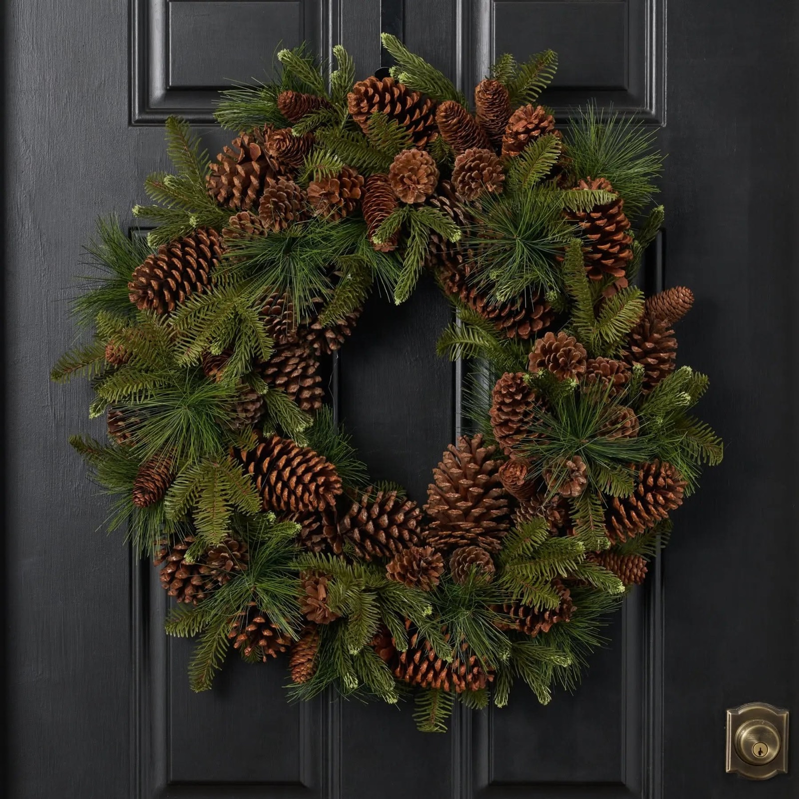
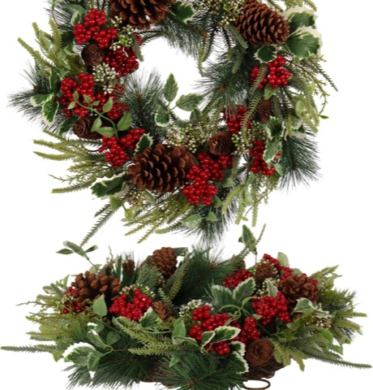
Pudate Christmas Wreath, 22 in, Artificial Pine with Red Berries and Pinecones
Shop on Amazon2. Weave Jingle Bells Into a Buffalo Plaid Wreath
Open this door and the wreath actually responds.
Frosted pine holds red buffalo plaid balls, a handful of silver jingle bells, small pinecones and red berries, all tied together with loops of jute twine.
It hangs on a rough wood plank door, which keeps the whole thing from feeling too polished.
Pick bells with real weight to them so the sound carries past the doorstep.
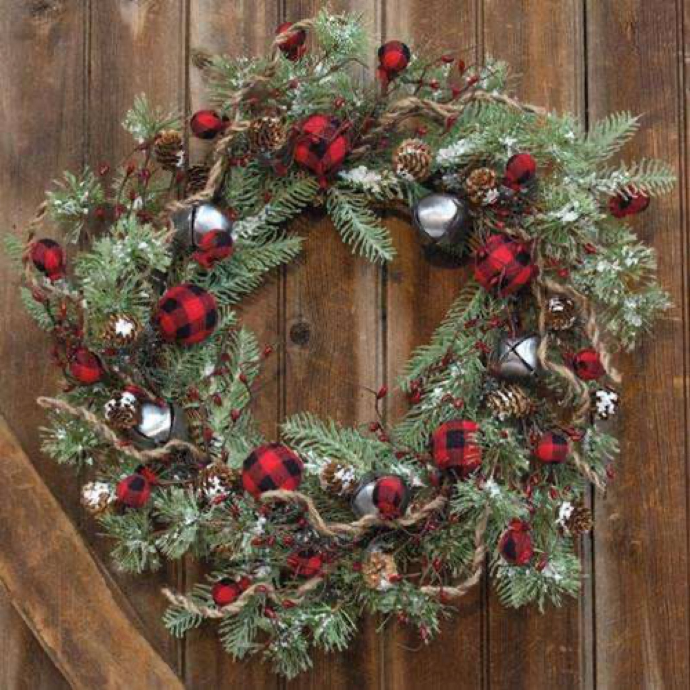
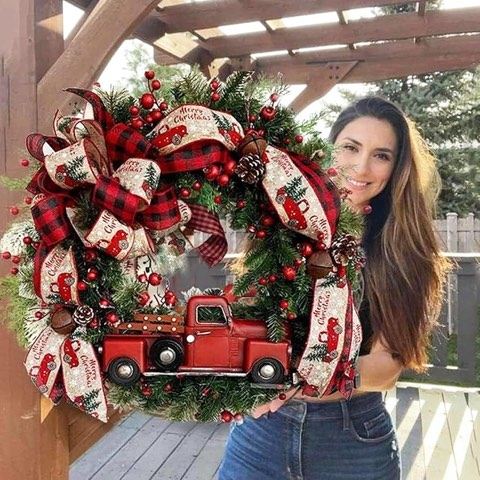
Vintage Red Truck Christmas Wreath, Buffalo Plaid Bow, Pinecones and Jingle Bells
Shop on Amazon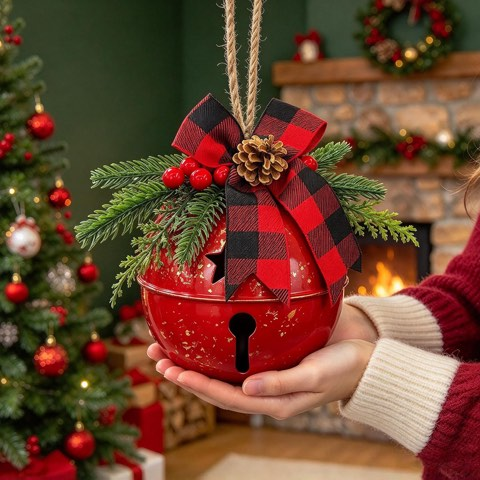
6 Inch Large Red Jingle Bell Decoration, Buffalo Plaid Bow with Pine Cone
Shop on Amazon3. Build a Black and Gold Glam Wreath With Metallic Leaves
Gold metallic leaves fan out behind this one like a sunburst.
Black and gold snowflake ribbon, gold mesh, and a mix of black and gold ball ornaments fill in the center, tied off with a gold bow.
Against a blue-gray door, the metallics practically glow.
Keep the leaf layer dense underneath so the ribbon has something full to rest on instead of bare wire.
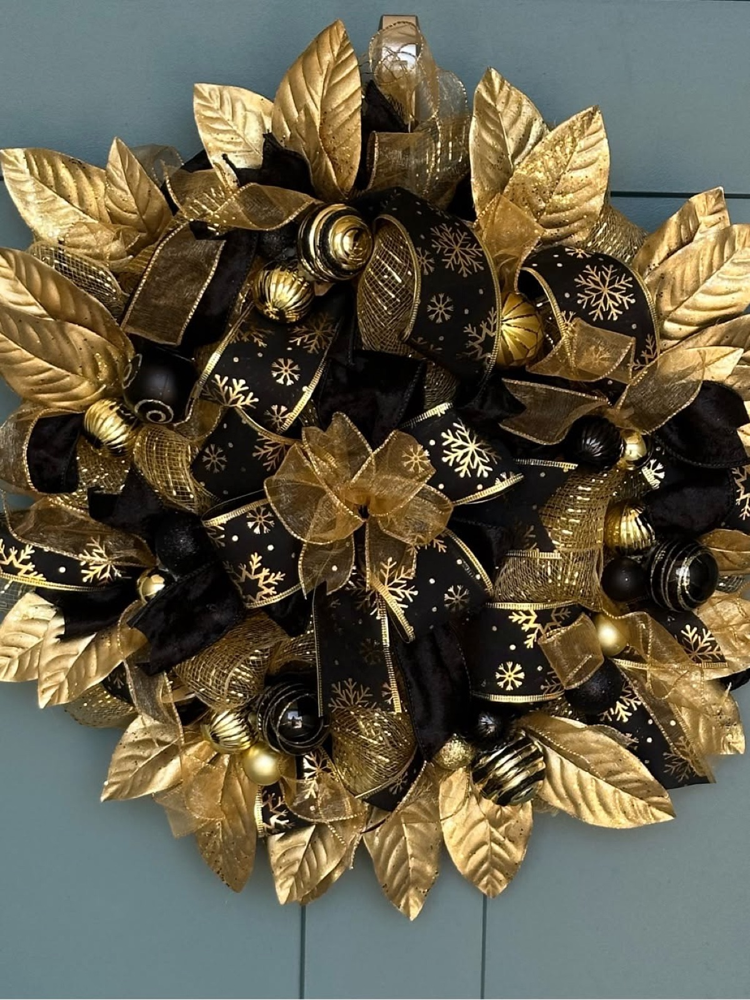
4. Layer Holly, Berries and Pinecones Into a Full Wreath
Fir, holly leaves and magnolia foliage are packed in tight on this one.
Clusters of red berries, frosted pinecones and a red velvet ribbon with long tails finish it off, the tails nearly reaching a brass mail slot below.
Nothing here is sparse.
Let the ribbon hang long and loose rather than cutting it short and tidy.
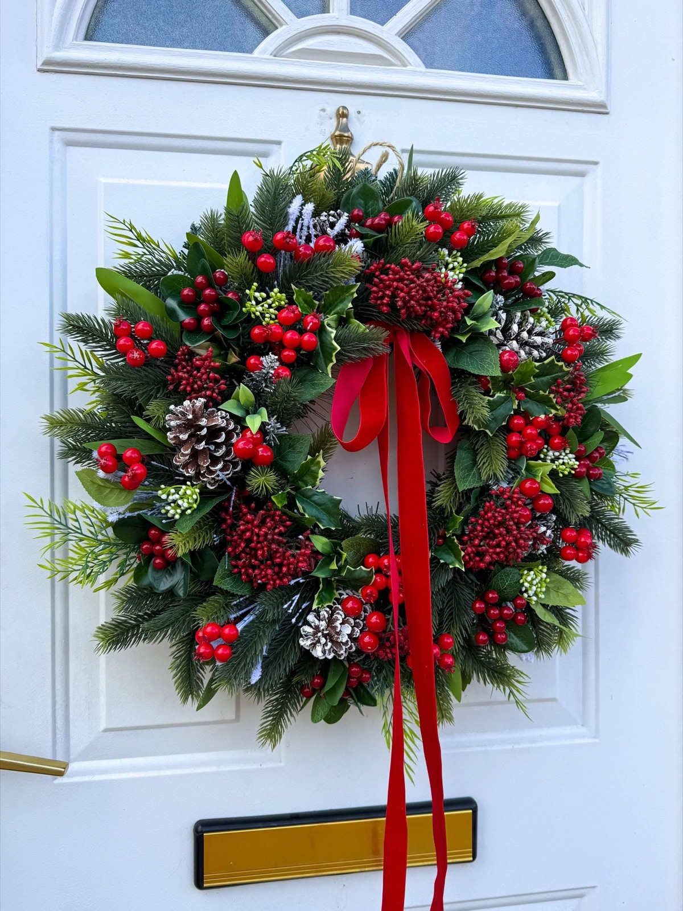
5. Tuck Dried Orange and Cinnamon Into a Cedar Wreath
This is the one wreath on the list you can actually smell from the porch.
Soft blue-green cedar holds dried orange slices, a cinnamon stick and small pinecones, with a champagne velvet bow finishing the bottom.
Bake the orange slices low and slow, or buy a bag and skip the afternoon.
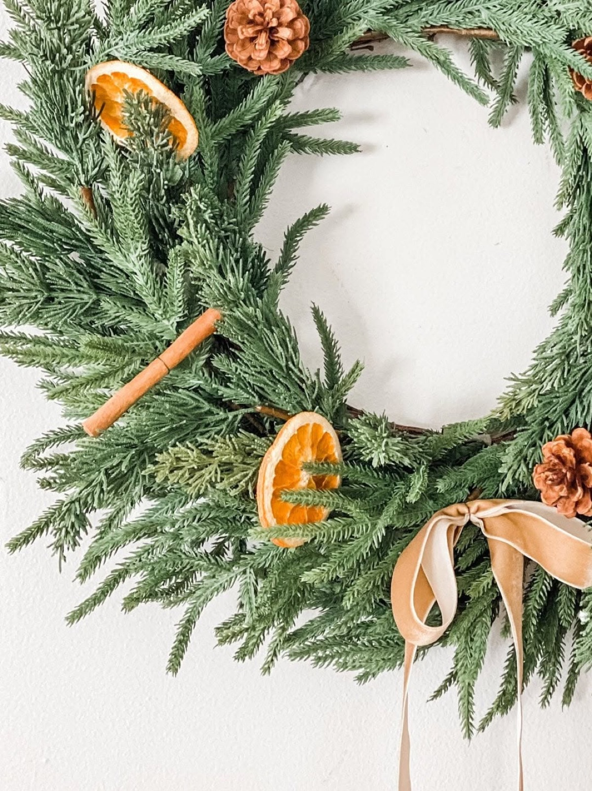
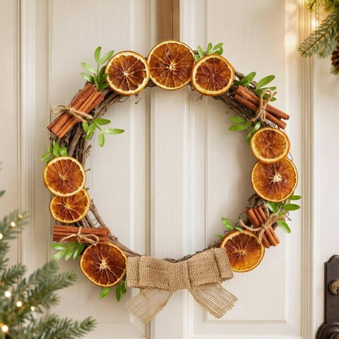
Naucoos 13" Christmas Dried Orange Wreath with Cinnamon and Burlap Bow
Shop on Amazon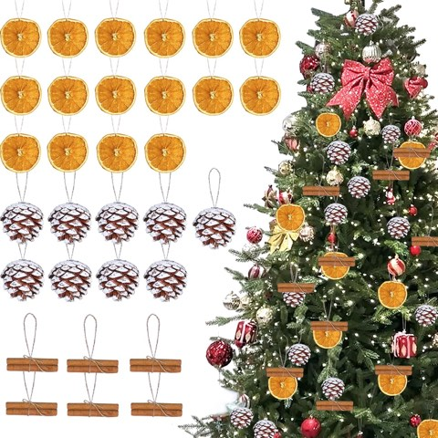
27 Pcs Christmas Ornament Kit with Pinecones, Dried Orange Slices, Cinnamon Sticks
Shop on Amazon6. Pair Gold Poinsettias With a Cream Bow
Gold poinsettia blooms replace the usual red at the base of this ring.
Gold ball ornaments, pearl-toned berry clusters and glittered fern sit among them, all topped by a large, shimmering cream bow.
The cream keeps the gold from feeling heavy.
Choose a wide, substantial ribbon. A thin one disappears against all that gold.
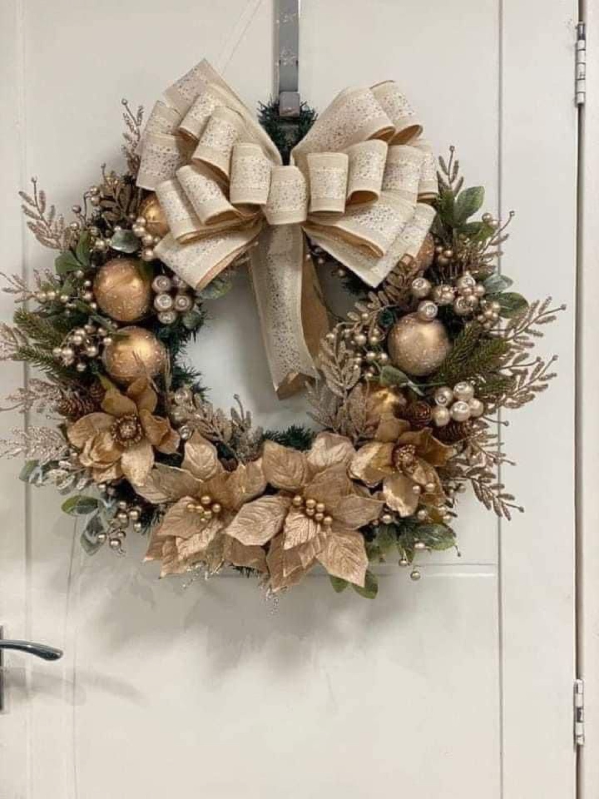
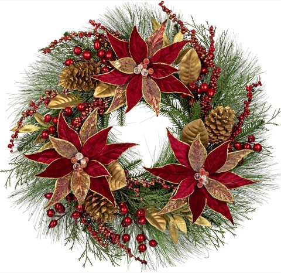
Hollyone Gold Poinsettia Christmas Wreath, 24 in, with Berries and Magnolia Leaves
Shop on Amazon7. Hang Gingerbread Cutouts on a Frosted Pine Wreath
Wooden gingerbread men and iced-snowflake cutouts hang among frosted pine and red berry picks.
A layered bow in red stripes and a gingerbread print ties it together, right beside a lit lantern on a sage green door.
It is the one idea here that will make someone smile walking up.
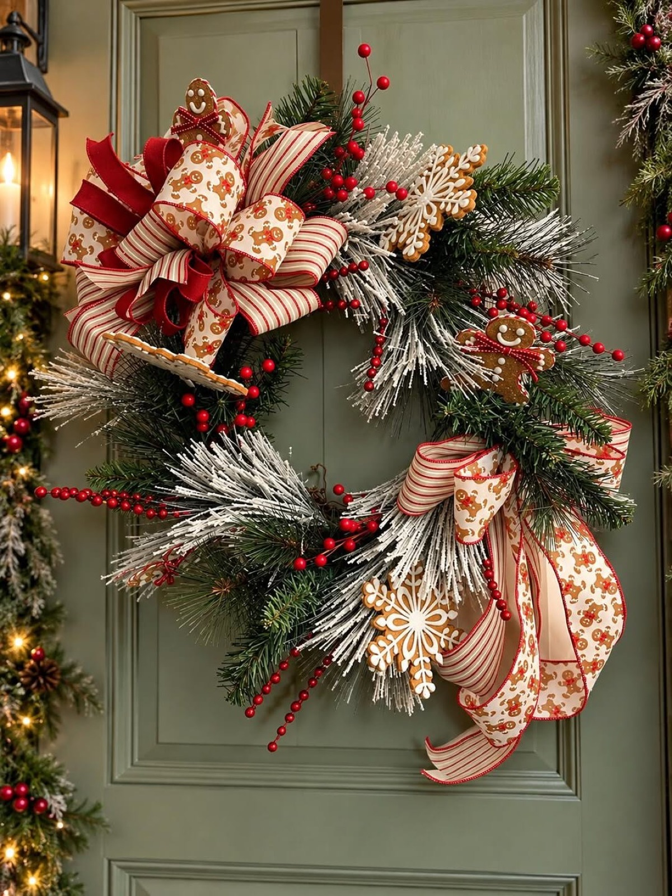
8. Set Silver Ornaments Among White Poinsettias
Three white poinsettia blooms sit among holly leaves, long pine sprigs and brown pinecones.
Silver matte ball ornaments and clusters of white berries fill the gaps between them.
White does not have to mean plain, and the silver proves it, catching just enough light to keep the wreath from flattening out.
Vary the ornament finish, some matte, some shiny, so it reads as dimensional rather than one flat surface.
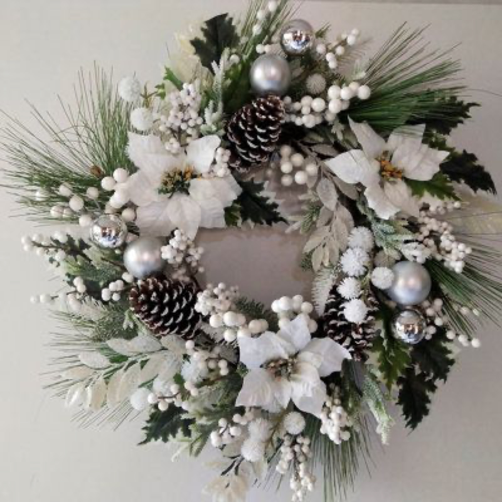
9. Build a Wreath Entirely Out of Wood Slices
No greenery base here at all.
A ring of overlapping round wood slices hangs from a jute cord, with a burlap bow, a single deep red hydrangea bloom and a wispy sprig of cedar at the bottom.
One bold flower is enough. A second would start competing with the wood itself.
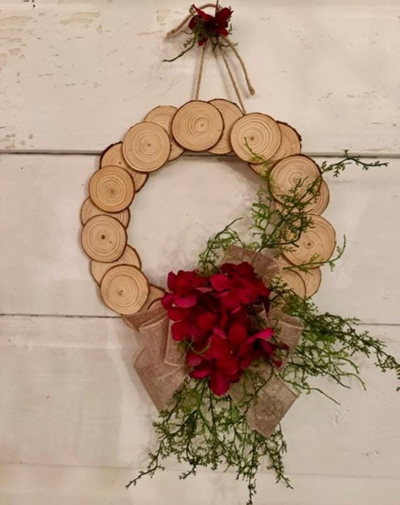
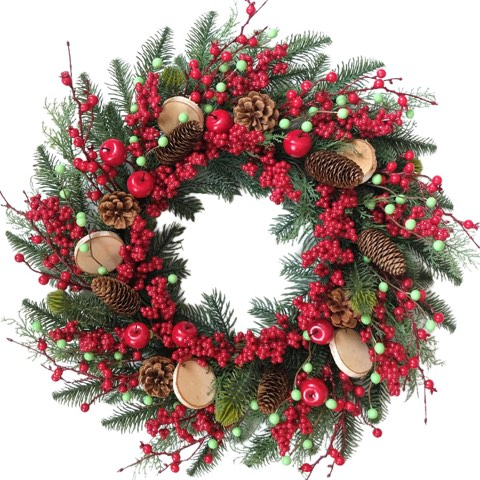
TEMPUS 22 Inch Rustic Winter Wreath with Red Berries, Pine Cones and Wood Slices
Shop on Amazon10. Pile Eucalyptus and Plaid Ribbon on One Side of the Wreath
This one skips the perfectly even ring.
Eucalyptus and berry-studded greenery is heaped onto one side of a bare grapevine base.
A red and navy plaid ribbon, trimmed in velvet, trails nearly to the floor from the top.
Leaving the other side of the vine exposed is what makes it look gathered rather than built.
Let the tails hang long on purpose. That asymmetry is the whole look.

11. Hang Lace Snowflakes on a Blush Pink Wreath
Soft pink poinsettias and yarn-ball ornaments sit against deep green pine.
Silver glitter balls, frosted eucalyptus, lace-cut white snowflakes and hanging crystal bells fill out the rest, with a tiny white deer figurine tucked into the center.
It still feels like the holidays, just a little more delicate about it.
Let a few ornaments hang below the ring on short cords instead of staying flush against the greenery.
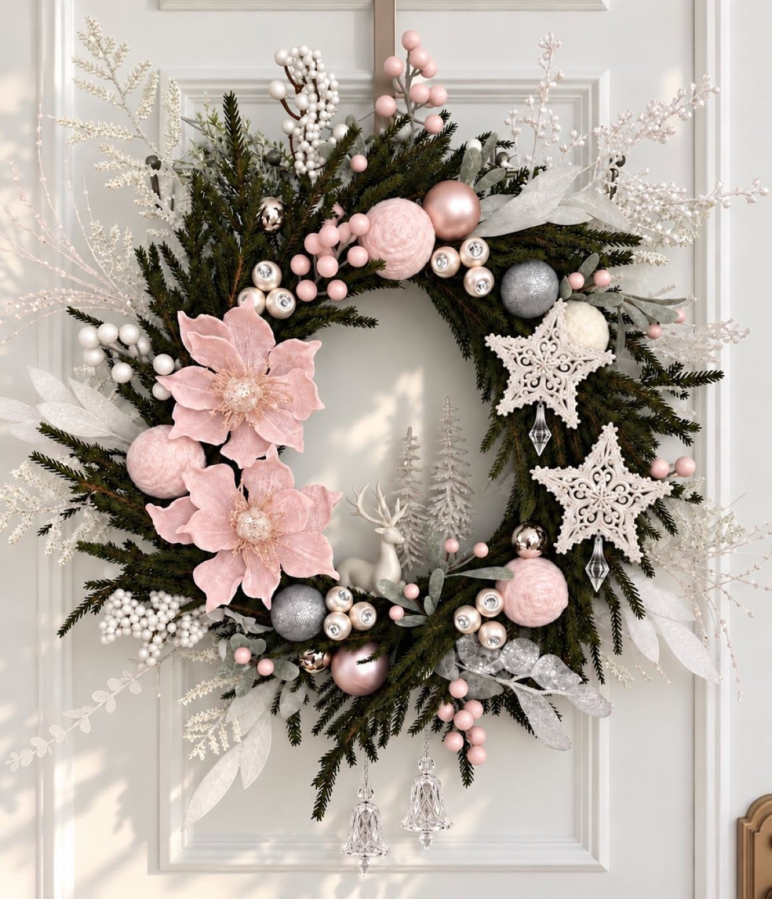
12. Keep a Eucalyptus Wreath Neutral, No Bow Required
Round, sage-green eucalyptus leaves cover this ring edge to edge.
A few frosted pinecones and clusters of white berries are tucked in. No ribbon anywhere.
That restraint is exactly why it can stay up through January.
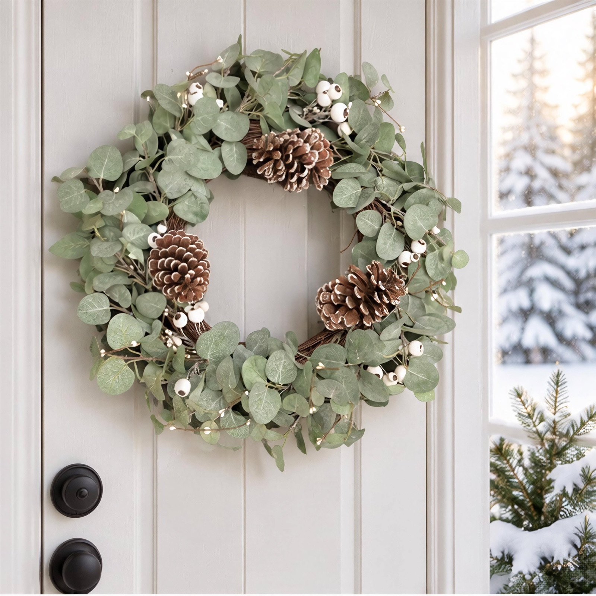
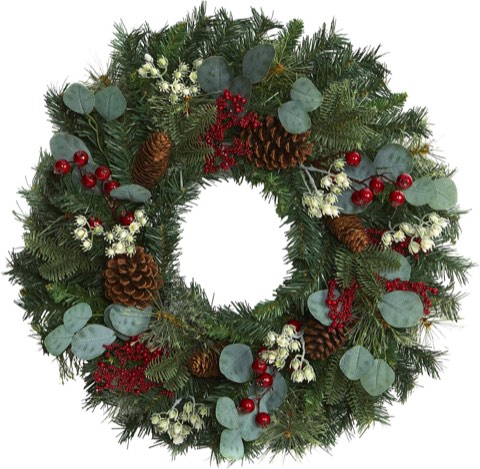
Nearly Natural 24in. Eucalyptus and Pine Artificial Wreath with Berries and Pine Cones
Shop on Amazon13. Hang Graduated Gold Bells Down the Center of a Pine Wreath
Three graduated gold bells drop on jute rope straight down the center of this wreath, instead of sitting around the ring like everything else.
Pine, cedar and eucalyptus surround them, with red berries and small pinecones tucked at the edges and a red and green plaid bow at the top.
The bells catch light in a way flat greenery never could.
Space them out along the rope rather than bunching them together at the bottom.
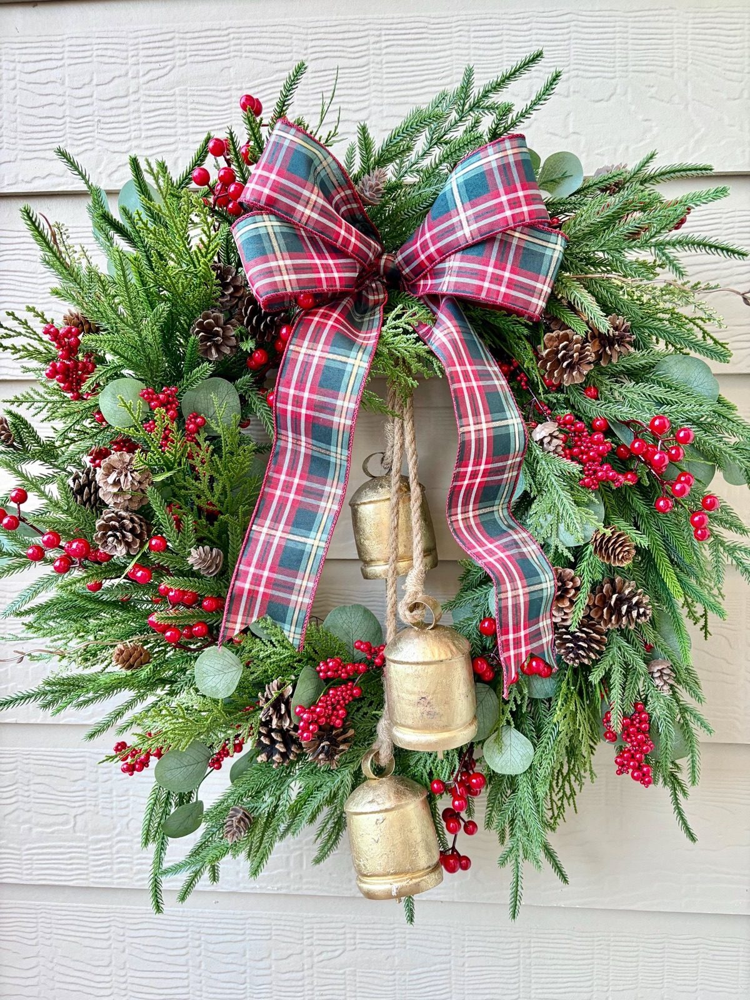
14. Flock a Wreath for a Full Winter Wonderland Look
Heavily flocked pine branches carry white pom-pom berry clusters and oversized, snow-tipped pinecones.
One large cream velvet bow, with long satin tails, gathers it all at the bottom.
The flocking is doing nearly all the work here.
Keep everything else minimal. One big bow and a handful of pinecones is plenty.
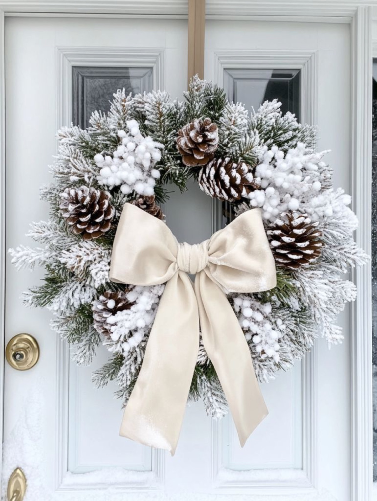
15. Hang a Small JOY Sign Above a Berry-Studded Wreath
A small gold JOY sign hangs on a dowel above this one, loose and a little wild natural pine and fir branches studded with bright red berries.
A few small pinecones and a plaid bow in red, green and cream finish it, against a dark charcoal door.
The sign adds a message without needing a bigger bow to carry the look.
Let the greenery stay uneven. Over-trimming it undoes the whole natural effect.
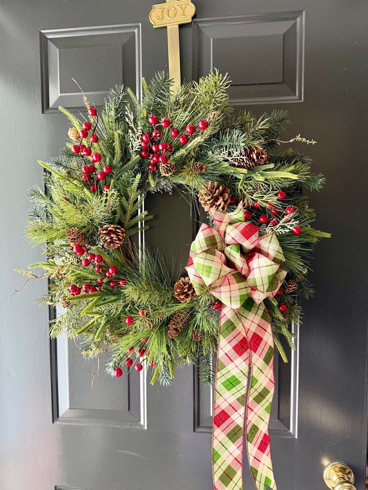
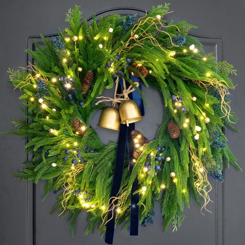
Pre-Lit Norfolk Pine Christmas Wreath with Bells and Velvet Ribbon, 24"
Shop on Amazon16. Add Copper Berry Sprays to a Magnolia Wreath
Bronze velvet magnolia blooms, each with a glittered gold center, sit low on this ring.
Copper beaded berry sprays shoot outward like fireworks among pale gold leaves, under one large champagne velvet bow.
Against a black door with bronze hardware, every metal tone reads as intentional.
Let a few of the beaded sprays extend past the edge of the ring rather than trimming them flush.
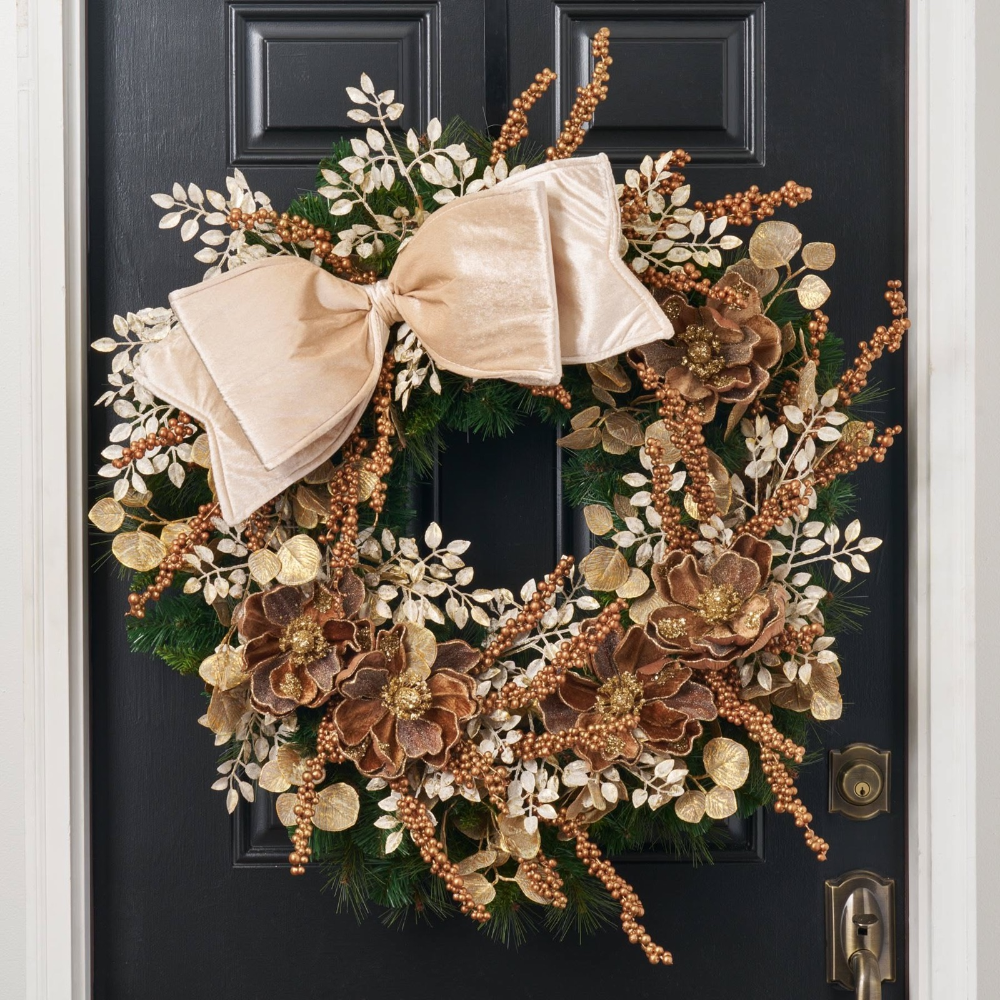
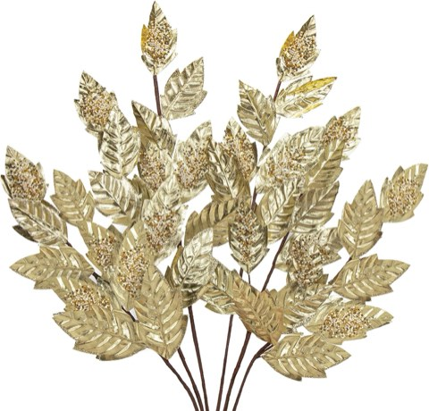
Golden Christmas Tree Picks and Sprays, Champagne Glitter Leaves, 6 Pcs
Shop on Amazon17. Scatter Mini Candy Canes Across a Flocked Wreath
Tiny candy cane picks are scattered through flocked greenery here.
A round, vintage-style Merry Christmas sign sits off to one side, with red and white curled ribbon loops and a red striped bow filling out the rest, on a slate blue door.
Playful, without losing the classic red-and-white look.
Curl a few extra ribbon ends with scissors for movement instead of leaving every loop flat.
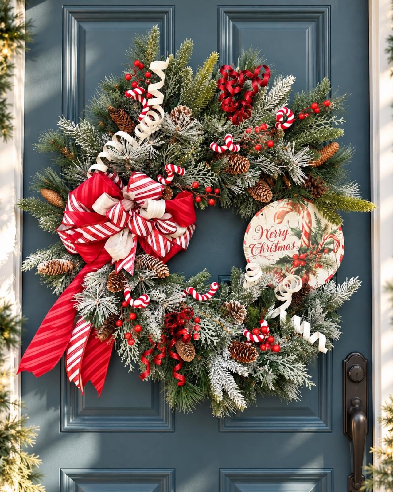
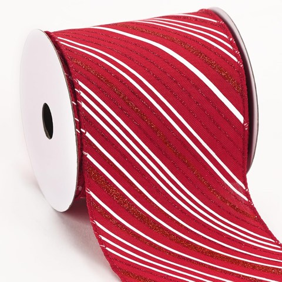
Paper Fair 4 Inch Candy Cane Christmas Wired Ribbon, Red Glitter Stripe
Shop on AmazonMerry Christmas Wooden Welcome Wreath Sign with Bow
Shop on Amazon18. Anchor a Wreath With Velvet Magnolia Blooms
The same bronze magnolia blooms can carry a wreath on their own, no copper sprays required.
Pale gold leaves and one oversized champagne velvet bow are enough to frame them.
It reads as rich and a little moody rather than bright and cheerful.
Group the blooms close together at the base instead of spacing them evenly around the ring.
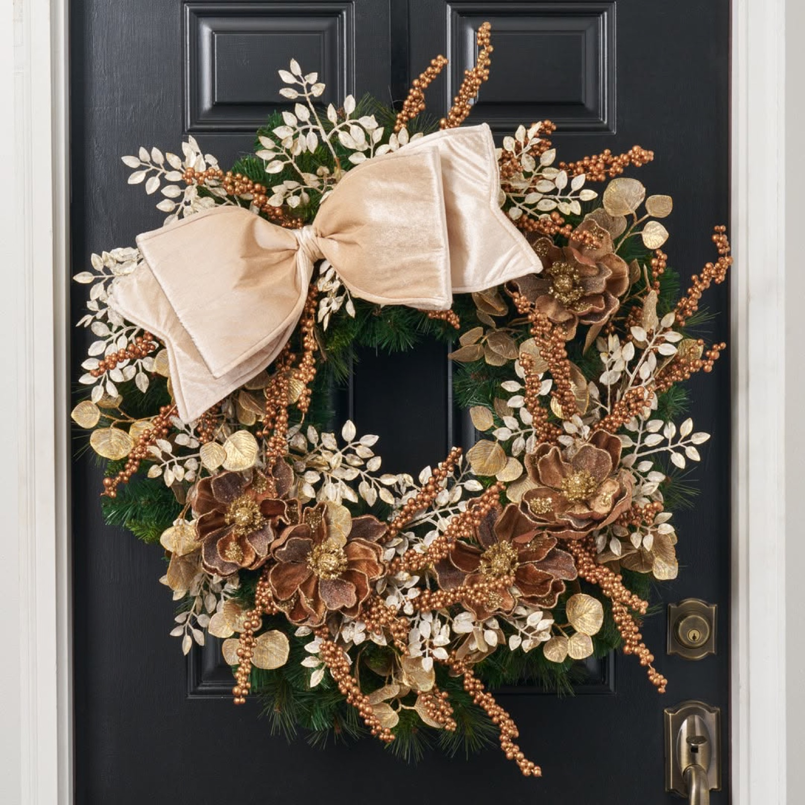
Suncalla 24 Pcs Christmas Velvet Magnolia Flower Picks, Brown Green Cream
Shop on AmazonKI Store Velvet Magnolia Flower Picks, White and Gold, Pack of 6
Shop on Amazon19. Trade Ornaments for Starfish on a Coastal Wreath
White starfish and a few pearl-sheen shells sit scattered through heavily flocked greenery.
A plain white bow ties it together, flanked by pine garland running down both sides of the door.
This is the one wreath on the list with nothing to do with the North Pole, and the flocking is what keeps it reading as winter instead of a summer beach find.
Live somewhere warm? This is the idea actually built for your climate.
Artisan Coastal Nautical Christmas Wreath with Starfish and Sand Dollar
Shop on AmazonNatural Seashell Wreath with Starfish and Pearls, 18 in
Shop on Amazon20. Cluster Red and Gold Ornaments Instead of Spacing Them Out
Large matte gold and shiny red ball ornaments are clustered together here in groups, not spaced evenly the way most ornament wreaths do it.
Cedar and pine fill the gaps, with red berry picks and gold glitter leaf sprigs woven through.
The clustering is what keeps it from reading as flat.
Group ornaments in threes and fives, never one at a time.
IVKHE 24 Inch Red and Gold Christmas Wreath with Velvet Ribbon and Magnolia
Shop on AmazonChristmas Teardrop Swag Wreath with Red Velvet Ball and Gold Berry
Shop on Amazon21. Warm Up a Silver Wreath With One Burlap Bow
Glittered sugared ball ornaments, in several sizes, sit among snow-tipped mini pinecones, icy sprigs and gold-flecked leaves.
One woven burlap bow in natural tan breaks up all that silver and white.
Silver and white alone can feel a little cold. The burlap is what keeps this one from feeling sterile.
Pick a loosely woven, slightly imperfect bow instead of one with crisp, stiff loops.
White Silver Christmas Wreath, Silver Poinsettia Victorian Style
Shop on AmazonRibbli Burlap Wired Ribbon, Natural, 2.5 Inch x 10 Yard
Shop on Amazon22. Let Cotton Bolls and Berries Sit on a Bare Grapevine Ring
Cotton bolls and clusters of red berries sit scattered across a bare grapevine ring, with a few dried brown leaves.
Long stretches of the woven vine stay fully exposed.
That exposed grapevine is what gives it a distinctly farmhouse feel.
Resist filling every gap. The bare vine is doing real styling work.
The Wreath King 18-23" Cotton Ball Wreath, Adjustable Stems
Shop on Amazon
23. Weave Fairy Lights Through a Gilded Ornament Wreath
Champagne and silver ball ornaments, in glittered, matte and metallic finishes, sit among gold leaf picks and pine.
Tiny warm fairy lights are woven straight through the greenery.
By night, the lights do the work daylight was doing a few hours earlier.
Mix at least three ornament finishes so the eye has somewhere new to land.
Valery Madelyn 24'' Pre-Lit Christmas Wreath, Champagne Gold Balls and Magnolia
Shop on AmazonNorthlight Pre-Lit Champagne Gold Glittered Twig Christmas Wreath, 42"
Shop on Amazon24. Center a Let It Snow Sign in a White Poinsettia Wreath
A round Let It Snow sign sits in the middle of fresh green eucalyptus and lamb's ear leaves.
White poinsettia blooms, small brown pinecones and clusters of white berries surround it.
It reads as winter first and Christmas second, which earns it a longer season on the door.
Pick a sign with a short phrase. Anything longer gets lost against the greenery.
Deroro Welcome Winter White Poinsettia Snowflake Front Door Sign
Shop on AmazonAshland Premium Poinsettia Christmas Wreath
Shop on Amazon25. Let a Plaid Bow Anchor an Asymmetric Pine Swag
Loose pine branches, red berry clusters and a handful of small pinecones gather on one side of a bare grapevine ring here, the same asymmetric approach as the opening wreath on this list.
A red and green plaid bow holds it together, with the vine left fully exposed on the other side.
Leaving half the ring bare gives it movement instead of a stiff, even circle.
22'' Artificial Pine Christmas Wreath with Pine Cones, Cedar
Shop on AmazonRibbli Christmas Plaid Wired Ribbon, Red/Green/Ivory, 10 Yard
Shop on AmazonHow to Choose Your Own Christmas Wreath
You do not need to copy any of these exactly.
Borrow a color palette from one, an accent from another, and make it yours.
Start with the base greenery.
Pine, eucalyptus, cedar and flocked branches all set a different tone before a single ribbon goes on.
Then choose one detail to carry the whole wreath, whether that is an oversized bow, a cluster of bells or a single bold flower.
Keep it simple enough that you will actually want to look at it every time you come home.
A wreath you love beats one that is merely matched.